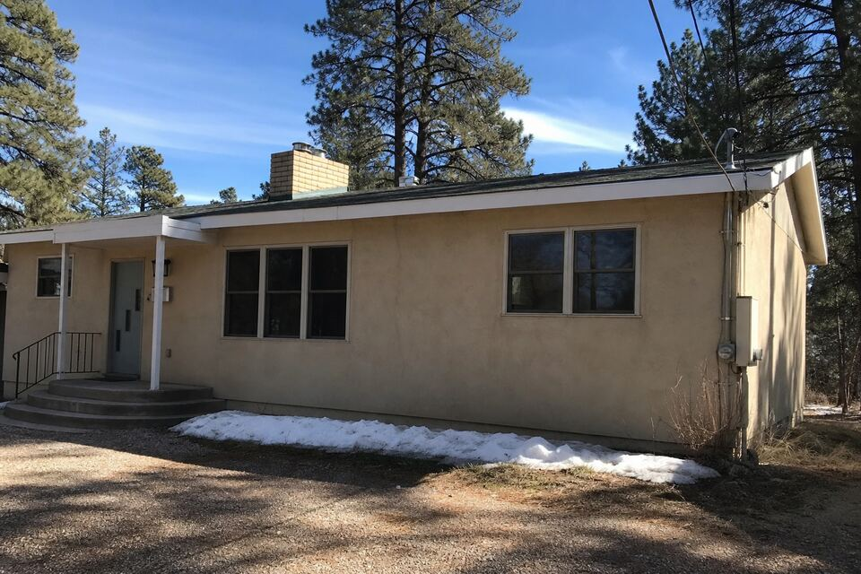

Stucco Work in Los Alamos, NM
Los Alamos sits even higher and colder than Santa Fe — its stucco runs the area’s harshest freeze-thaw schedule, on a housing stock with its own distinct eras. Cracks, parapets, color, or a full project — call (505) 416-4951 or send the form; one plain sentence about the wall is enough.

The harder-winter version of every problem
At 7,300-plus feet, Los Alamos winters multiply the freeze-thaw math: more cycles, deeper freezes, and crack-to-spall timelines that run faster than Santa Fe’s. The practical translation is seasonal urgency — fall sealing matters more on the Hill than anywhere this site serves, and a crack ignored through one winter here costs what two winters cost below. White Rock’s canyon-edge exposure adds wind-driven weather to sun-facing walls.
The housing stock tells the town’s story: mid-century homes from the lab’s early decades with original stucco reaching genuine end-of-era, alongside newer rebuilt-period construction whose synthetic finishes are now hitting their first recoat questions. Both patterns are routine work; the visit reads which era your walls belong to and what that era’s honest next step is.
Services available in Los Alamos
The full lineup runs here as it does across the area: repair, re-stucco and color coats, new installation, and parapet and canale work — with the material guide deciding what belongs on which wall and the cost guide covering what moves the number.
Wall on your mind in Los Alamos?
Send the form with your area and what you are seeing. The look-at-it visit does the diagnosing; the itemized quote follows.
Questions people ask
Is stucco even practical in Los Alamos winters?
Yes — properly installed and maintained cement stucco handles hard-freeze country fine. What the elevation punishes is deferred maintenance; the seal-it-in-fall habit is the whole game up here.
Our mid-century home has original stucco. Repair or re-stucco?
Seventy-year-old stucco that has been maintained can keep going wall by wall; systemic cracking and substrate failure say re-stucco. The visit sounds the walls and shows both numbers.
Do you actually come up the Hill?
Yes — Los Alamos and White Rock are regular territory, with scheduling that respects the canyon weather windows.